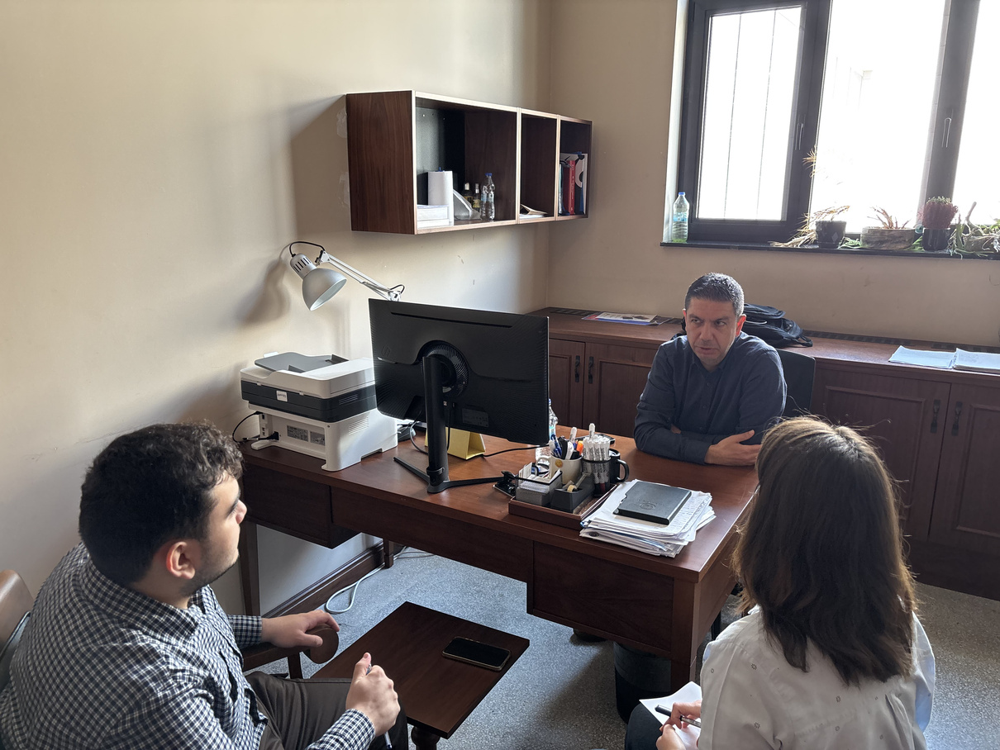
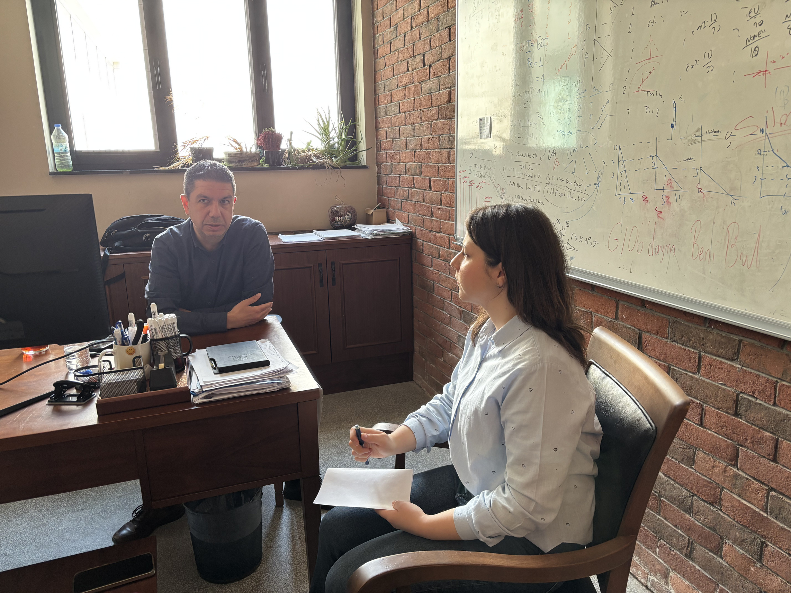
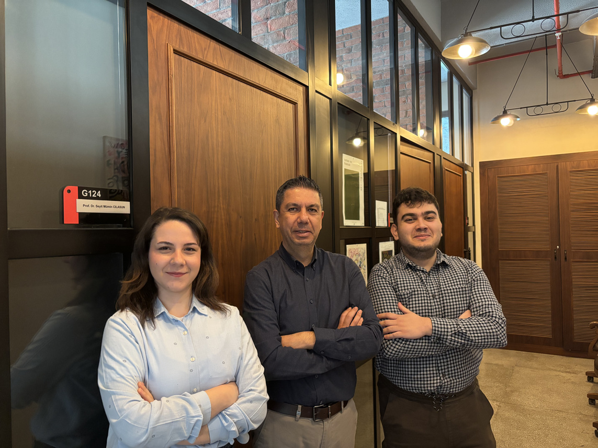

The global economy is changing in terms of structure, with the help of artificial intelligence transitions. The economies' rules are being rewritten in real time, from the rise of autonomous AI agents to the shifts of the labor market. But what does this mean for policymaking, the future of the workforce and developing nations such as Türkiye?
To understand these complex changes, we spoke with Prof. Dr. Seyit Mümin Cilasun, a scholar who bridges academia and high-level policymaking. Prof. Cilasun brings a unique perspective drawn from his tenure as Deputy General Manager of Structural Economic Research at the Central Bank of the Republic of Türkiye, and from his current leadership of the Applied Data Science Master Program and Applied Data Science Center at TED University, where he is also a faculty member in the Economics Department. In this exclusive interview, he discusses the intersection between data science and traditional econometrics, the threat of wage polarization, and why tomorrow's economists will need to treat AI not as a replacement, but as a colleague.

Personal journey and the role of chance
Before we dive into the technological shifts, let's talk about your personal journey. We know you specialize in areas like econometrics, microeconometrics, and development economics. What initially motivated you to choose economics?
Let's start with a somewhat disappointing answer: it was entirely by chance. Back when we took the university entrance exams, you had to make your choices right as you entered. I didn't really know the difference between business administration and economics, or what either profession actually did. I just followed the standard ranking for my academic track: business, economics, international relations, public administration. Economics at Middle East Technical University was selected. Looking back, it was probably one of the luckiest moments of my life. My love for economics didn't really blossom until my senior year. Through elective courses, I finally grasped how economics contains such diverse, high-quality information, and how enjoyable it is to understand those concepts. Even my transition into academia was a stroke of luck; I applied for a Master's degree at Hacettepe University on the very last day. But the professors there had a profound impact on me. That's when I decided I wanted to be an academic.
Alongside your academic work, you've held significant roles at the Central Bank of Türkiye. How did your experience in a policymaking institution intersect with your academic perspective?
I place a massive emphasis on the intersection of social sciences and policymaking. In the academic world, the research you produce often stays trapped within a journal, reaching a very limited audience. On the flip side, policymakers, especially in Türkiye, rarely have the time or connection to sift through academic journals for guidance. The Central Bank is arguably the best place in Türkiye that bridges this gap. It is highly active in the policymaking process, but it also possesses a deeply qualified human resource pool capable of producing academic knowledge. Being there showed me how much these two worlds need each other. Seeing your research directly utilized to design policies that improve things is far more rewarding than just publishing a highly-cited paper. Today, whether I'm doing academic work or consulting for institutions like the Ministry of Trade or KOSGEB, I always start by asking: "What practical policy can we derive from this data?"
The winners in this new era will be the people who learn to treat AI as a co-worker. — Prof. Dr. Seyit Mümin Cilasun
Data science and the future of economics
Economics has increasingly shifted toward a data-driven field. As the Director of an Applied Data Science Center, how do you see the rise of data science tools, like Python and machine learning, transforming traditional economics?
Data science is incredibly useful for handling massive datasets and speeding up our workflows. For instance, I can use machine learning to quickly determine which variables to focus on before diving into my econometric models. Furthermore, data scraping allows us to essentially create our own data. In the past, we asked, "What can I extract from this limited dataset?" Now, thanks to data science, we can ask, "What data can I create to answer my specific question?" The two fields are finally converging, particularly through causal machine learning, which is exactly where the future lies.
In this issue of ERUMAG, we are focusing heavily on AI agents and their capacity for autonomous decision-making. Looking through the lens of a development economist, how will this technology alter management and production structures?
From a management perspective, it will likely lead to a flattening of corporate hierarchies. The middle management layer is at risk of disappearing. Unlike previous technological shifts, like heavy robotics, which were too expensive for small firms to adopt, AI is much more accessible. We are already seeing high adoption rates among smaller firms. However, we must distinguish between general AI tools and autonomous AI agents. Advanced AI agents are still costly. If they become the standard, larger firms will adopt them first. But overall, we are looking at a transformed management architecture: strategic, top-level decision-makers on one end, basic routine workers on the other, and a hollowed-out middle.
The labor market and wage inequality
From a labor economics standpoint, will AI act as a substitute for human labor, or a complement that boosts productivity? Could this deepen income inequality?
It is a highly uncertain landscape right now, but every new technology brings a degree of substitution. AI will definitely replace certain routine cognitive tasks, like basic data entry and preliminary analysis. In the short term, those workers will face unemployment. On the other hand, AI acts as a massive complement for higher-level, strategic decision-makers. It removes time friction and vastly increases their efficiency, which will likely drive their wages up. Because of this dynamic, wage polarization is almost guaranteed to increase in the near future.

With that in mind, how should the current workforce approach reskilling? Can human labor and autonomous software seamlessly co-exist?
Reskilling is no longer optional; it is mandatory. We have to redesign our entire educational and professional planning around this. The winners in this new era will be the people who learn to treat AI as a co-worker. Yes, AI will automate tasks, but if you can figure out how to leverage it to increase your own output and efficiency, you will thrive. There is a trade-off, of course. Some worry that by relying on AI to draft emails or write code, our own raw skills will degrade. That is true to an extent. But if you stubbornly refuse to use AI just to preserve your traditional skills, someone less skilled than you, who is using AI, will outpace you in speed and quality. You have to find a balance.
Many routine office and data-entry jobs are predominantly held by women. As AI automates these roles, will it exacerbate gender inequality in the workforce?
In Türkiye, we are already starting from a severely disadvantaged position regarding female labor force participation. Even as the rate of female university graduates rises, unemployment remains disproportionately high. AI introduces another major shock to this fragile ecosystem, specifically targeting roles traditionally held by women. However, this doesn't have to be entirely negative. If the state steps in with active labor policies and targeted AI training, this technology could actually facilitate remote work and flexible hours. For a new mother who might otherwise leave the workforce, mastering AI could allow her to stay integrated into the economy on her own terms. It all depends on whether we proactively design policies to support this transition.
Policy strategy for developing nations
How should a developing nation like Türkiye prepare for this looming wave of AI-driven unemployment? Do we need radical policies like Universal Basic Income?
Let's be realistic: Fiscal space for Universal Basic Income would not be possible in Türkiye. Furthermore, our policymaking process is historically sluggish, and inter-institutional coordination is weak. With AI, the cost of falling behind is exponential. Türkiye urgently needs a centralized "supreme council" or mastermind for AI policy. We need rapid integration starting from the education system all the way to active labor market incentives. If the state just sits back and expects the private sector to handle it, the productivity gap between Türkiye and developed nations will widen drastically.
Are there heavy bureaucratic hurdles for companies trying to adopt AI in Türkiye compared to Europe or the US?
I don't see any significant bureaucratic or legal hurdles in Türkiye for companies wanting to adopt AI; the barrier is mostly financial. Globally, the landscape is shifting. Historically, Europe has taken a more conservative, highly regulated approach to tech, which I actually prefer, as it protects social equality. But after seeing the US and China deregulate and aggressively push AI to dominate the market, Europe realized it was losing its capital and talent. They've been forced to change their stance. We are now in an era of somewhat uncontrolled AI frenzy worldwide.

Finally, what is your ultimate advice for young economists just starting their careers in this rapidly changing environment?
An economist who trains themselves properly is actually highly advantaged right now. Three or four years ago, everyone said "software engineering" was the profession of the future. Now, AI can write that code. The unique advantage of economics is that we teach you how to interpret. Even if AI automates your data analysis, you still need a human to look at the results and ask, "How does this connect to reality? What strategic policy can we build from this?" If you can combine strong data analysis skills with strategic interpretation, using AI as your assistant, you will be the most sought-after professional in both the public and private sectors. Put AI in your toolkit, but don't surrender everything to it. Add your unique economic intuition to the mix.
As TED University Economics Research Union, we thank Prof. Dr. Seyit Mümin Cilasun for this special interview and his support in our works.